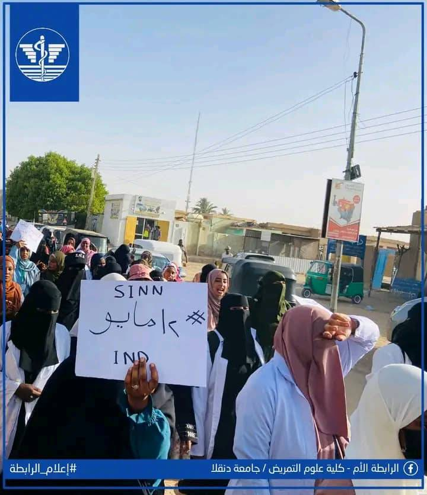

توثيق حي لرحلة العطاء في الميدان السوداني الرقمي والواقعي
فعالية ميدانية
كادر متطوع
مستفيد كلي

شاركت شبكة الممرضين السودانيين بفعالية مميزة في احتفالات اليوم العالمي للتمريض بكلية التمريض – جامعة دنقلا.